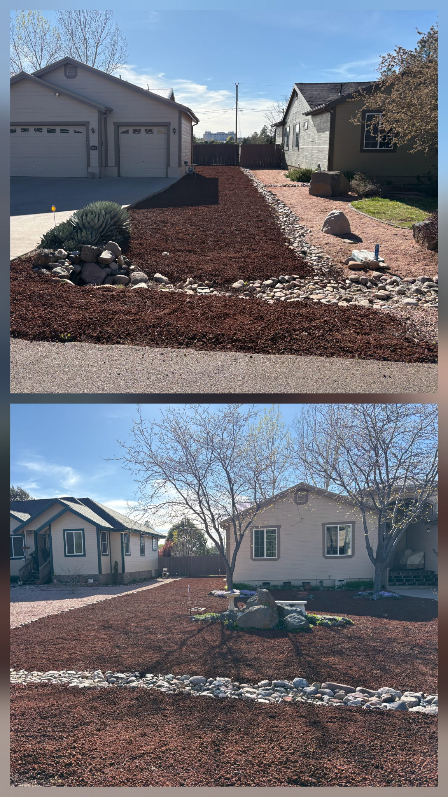
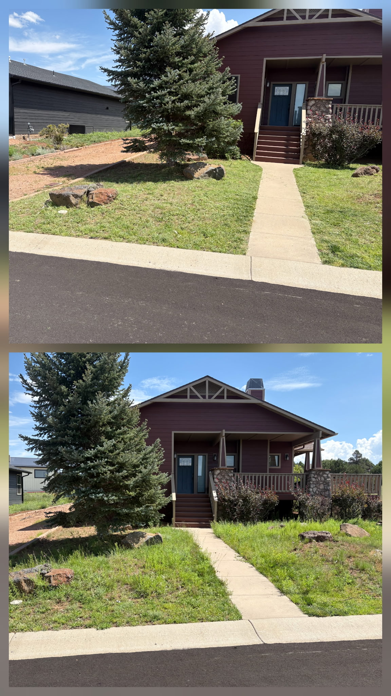
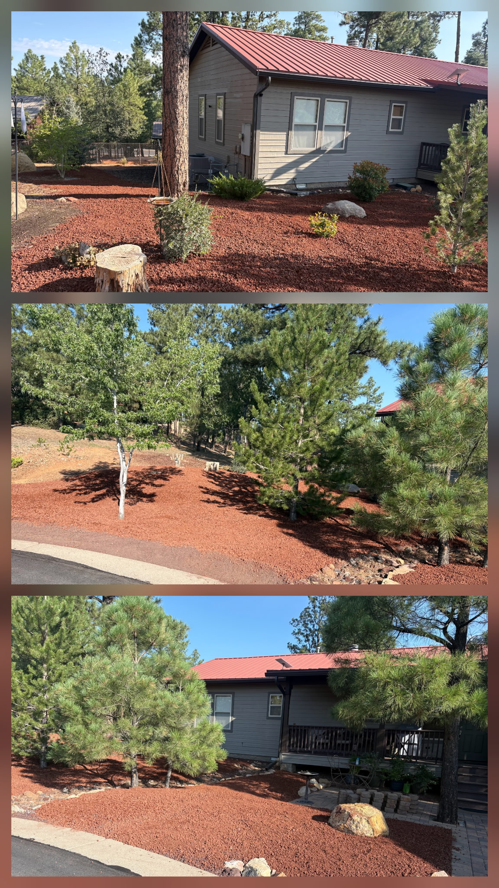
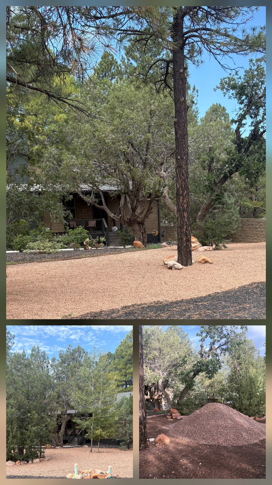

Completed projects
Real yards. Real results.
A look at cleanup, rock spreading, mowing, trimming, and property-care projects completed by our crew.
Before & after
From pine-covered to cleaned up.
 Before
BeforePine-needle cleanup: before
A layer of fallen pine needles, cones, and small branches covers the ground between the home and neighboring fence. This is the starting condition for the side-yard cleanup shown here.
 After
AfterPine-needle cleanup: after
Accumulated needles, cones, and loose debris have been cleared from around the pine trees and beside the deck, leaving the side yard tidier and the ground more visible.
More completed work
Clean, practical improvements.

River-rock border and landscape refresh
A broad border of rounded river stone defines the edge of the driveway. Decorative gravel surrounds the existing boulders and trees for a clean, coordinated front-yard finish.

Property cleanup and gravel coverage
Even gravel coverage ties together the open space between the homes and gazebo. The finished yard keeps the existing pine trees, smaller evergreens, and landscape features in view.

Hedge trimming and yard care
These shrubs are shaped along the stone walkway and deck stairs. Trimming defines the planting edges and keeps the home's access path clearly visible.

Decorative rock across a front yard
A continuous layer of decorative gravel covers the front yard around mature trees and existing planting areas. The rock gives the space a consistent finish alongside the curved driveway.

Wooded-lot cleanup
Ground cleanup opens up the space between mature pines while leaving the trees and natural rock features in place. The result is a tidier woodland yard around the neighboring homes.

Cleanup beside a deck and gravel path
Pine-needle and loose-debris cleanup makes the stone-edged gravel path stand out beside the deck. Existing trees, shrubs, and larger rocks remain part of the natural yard.

Residential property care
This cleanup leaves more open ground around the property's pine trees and outbuildings. The broad view shows how the maintained yard connects the structures and surrounding outdoor space.
More work from Chuck-it
Additional completed projects.
More of the mowing, rock spreading, cleanup, and property-care work completed for local customers.

Decorative-rock landscaping
These two views show red decorative rock spread around established trees, shrubs, and boulders. Rounded river-stone borders separate the rock areas and carry the design across the front yards.

Lawn mowing and cleanup: before and after
The bottom photo shows tall grass around the front walkway; the top photo shows the lawn after mowing and cleanup. The shorter grass brings the walkway, large evergreen, and landscape rocks back into focus.

Red-rock spreading and property refresh
Three angles show decorative red rock spread around the home, existing shrubs, and pine trees. The consistent coverage connects the planting areas along the front and side of the property.

Gravel delivery and spreading
The lower-right photo shows the delivered gravel before spreading. The other views show the finished coverage around the wooded home, with existing trees and large landscape rocks retained.